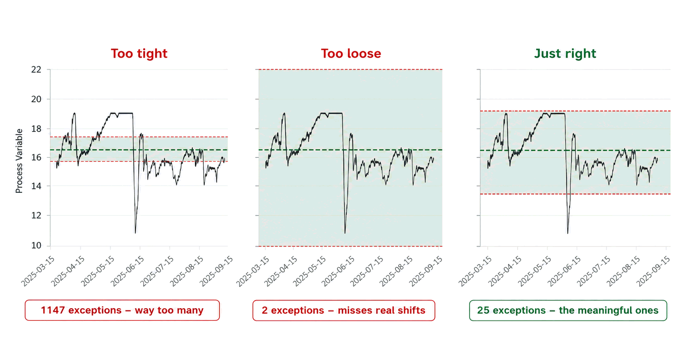

Tier 2 — Optimization: Envoy Smart Centerlines
Optimal target values for every process variable, grade, and rate — statistically derived from your own operational data by our engineers. So operators always know exactly where to run, regardless of shift, experience level, or grade history.
The Concept
A centerline defines the ideal target value — or optimal operating range — for each key process variable, specific to a particular paper grade and production rate. Rather than relying on historical averages or operator memory, a centerline answers a precise question: given this grade at this speed, where should this variable be right now?
When process variables drift outside their optimal range, runnability suffers: breaks happen more frequently, quality becomes inconsistent, and recovery after disruptions takes longer. A well-maintained set of centerlines gives operators a clear, objective target to return to — removing ambiguity and accelerating stabilization.
Envoy Smart Centerlines goes further than a simple target table. Our centerlines are statistically derived from your own operational history — built by our engineers to identify the conditions that actually correlate with your best performance — and kept live, so operators can see where they stand at any moment.

The Challenge
Without a formal centerlining system, mills rely on tribal knowledge — and that creates significant, recurring vulnerabilities that compound over time.
Without grade-specific targets, grade transitions depend on operator experience. Different shifts make different choices. Recovery time varies widely, and the best-performing conditions from last month's run exist only in someone's memory — if they're still working there.
Each operator has their own running style. Without objective targets, the same grade can run very differently across three shifts — producing variable quality, inconsistent runnability, and break rates that nobody can fully explain.
When a senior operator or process engineer retires, years of learned process knowledge leaves with them. There's rarely a systematic way to capture what they know about which grade runs best at which conditions — until Smart Centerlines codifies it.
After an unplanned outage or a difficult grade change, operators work by feel to restabilize the machine. Without documented targets for that grade at that rate, every recovery is a fresh experiment — adding minutes or hours that shouldn't be there.
The Method
Our centerlines aren't simple averages of historical data. They're derived through a multi-step process that identifies the conditions your mill actually performs best under — then keeps them visible and current.
We analyze your historian data to identify which combinations of operating conditions have historically produced your best runnability and quality outcomes. This is grade-specific and rate-specific — we don't mix a 45 lb offset grade with a 24 lb groundwood run. Each grade-rate combination is treated as its own dataset.
Single-variable analysis tells you where one tag has historically run. Our models go further — using established statistical methods to find the combinations of variables that correlate with top-quartile runnability and quality, including interactions that aren't obvious from looking at variables in isolation. All outputs are deterministic: coded rules and statistical formulas, not black-box predictions. Every target can be traced back to your own process data.
Before any centerline targets go live, your Envoy engineer reviews them for process logic. A statistical correlation doesn't always reflect a physical relationship — our engineers catch the cases where the data suggests something that process knowledge says is wrong, and they validate the targets against your specific equipment and grade requirements.
Your current process variables are compared against their centerline targets in real time. Operators can see at a glance which variables are within their optimal window, which have drifted, and by how much. The centerlines evolve as your process data accumulates — capturing improvements and adapting to changes in raw materials, equipment, or grade specifications.
How It Looks
This is the kind of view Smart Centerlines makes possible — a process variable tracked over time, against its grade-specific optimal operating range. When variables drift outside their window, operators have an objective target to return to.
The Results
Every process variable has a cost curve. Run it too low and you pay in off-spec production, giveaway, and breaks. Run it too high and you pay in steam, refining, chemical, and fiber. Somewhere in between is the point where total cost is lowest — and that point is your centerline.
The limits around it define how far you can move before the cost starts climbing again. And because the curve shifts with every grade and every rate, so do the targets — which is exactly why a single static target table has never worked.
Operators enter every grade change with a clear target set — not a blank slate. Stabilization is faster, and the best conditions from the last successful run are always documented and accessible.
When every operator is working toward the same objective targets, shift-to-shift variability in quality and runnability decreases. The best shift becomes the reference — not the exception.
Coming back from an unplanned outage is hard enough. With grade-specific centerlines to reference, operators restabilize more quickly — spending less time experimenting and more time producing.
When your best operator retires, the knowledge they carry about how each grade runs best doesn't have to leave with them. Smart Centerlines captures it — statistically, systematically, and in a form the whole team can use.
Want to understand the full foundation before exploring centerlines?
Learn About Process Reliability ReportingReady to Optimize?
Request a demo and we'll walk through what a centerlining program would look like for your specific grades, rates, and process areas.